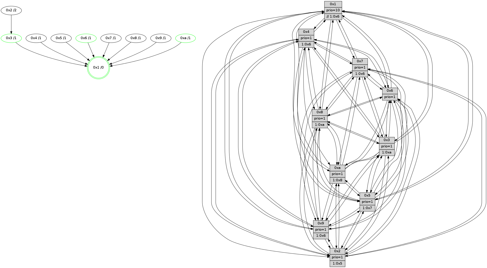

>> << IDX [start] -100 -25 -5 +0 +5 +25 +100 [1120.36270499]
 Previous packets
----------------------------------------------------------------------
1115.633920 beacon01(faad) #0 coord=01,02,03,04,05,06,07,0a,09,08 cycle=688.0ms assoc
-- color-indic=1 64 b4 00
1115.643904 beacon02(faad) #0 coord=01,02,03,04,05,06,07,0a,09,08 cycle=688.0ms assoc 64 27 31
1115.653902 beacon03(faad) #0 coord=01,02,03,04,05,06,07,0a,09,08 cycle=688.0ms assoc 64 5d 7c
1115.663903 beacon04(faad) #0 coord=01,02,03,04,05,06,07,0a,09,08 cycle=688.0ms assoc 64 2a 96
1115.673904 beacon05(faad) #0 coord=01,02,03,04,05,06,07,0a,09,08 cycle=688.0ms assoc 64 50 db
1115.683904 beacon06(faad) #0 coord=01,02,03,04,05,06,07,0a,09,08 cycle=688.0ms assoc 64 de 0c
1115.693905 beacon07(faad) #0 coord=01,02,03,04,05,06,07,0a,09,08 cycle=688.0ms assoc 64 a4 41
1115.703908 beacon0a(faad) #0 coord=01,02,03,04,05,06,07,0a,09,08 cycle=688.0ms assoc 64 d5 4a
1115.713908 beacon09(faad) #0 coord=01,02,03,04,05,06,07,0a,09,08 cycle=688.0ms assoc 64 5b 9d
1115.723909 beacon08(faad) #0 coord=01,02,03,04,05,06,07,0a,09,08 cycle=688.0ms assoc 64 21 d0
1115.735303 [Hello(4): seq=712 sym=5,7,6,2,3,9,8,10,1 sysInfo= stat=5:2,12,11,14/7:5,3,9,9/6:6,4,12,12/2:7,5,4,13/3:2,0,12,11/9:2,13,0,10/8:5,0,15,4/10:3,13,4,12/1:10,6,5,1]
1115.737827 [Hello(10): seq=645 sym=6,2,3,8,7,5,9,4,1 sysInfo=hasWarning stat=6:15,8,14,6/2:15,12,1,9/3:15,15,4,11/8:7,12,6,0/7:2,8,14,5/5:5,12,11,14/9:10,15,14,2/4:1,15,14,9/1:3,6,15,1]
1115.740874 [Color(1) seq=393 @0:0 prio=10 >>1.@6,1.@7,1.@8]
1115.743612 [Hello(8): seq=656 sym=5,2,3,4,9,6,7,10,1 sysInfo=hasWarning stat=5:12,6,0,0/2:6,2,11,9/3:15,9,0,15/4:1,15,5,10/9:0,7,1,3/6:13,7,14,13/7:2,12,14,3/10:1,14,4,3/1:2,13,4,0]
1115.746924 [TreeStatus(2)-.->1 #0.167 tree-change,inconsistent-stability child=1]
1115.749178 [Hello(7): seq=712 sym=2,3,5,6,4,8,9,10,1 sysInfo=hasWarning stat=2:15,12,3,0/3:0,6,3,15/5:5,0,0,1/6:13,9,1,9/4:7,13,3,1/8:0,5,10,1/9:10,1,3,1/10:2,12,4,4/1:2,15,5,0]
1115.752306 [TreeStatus(4)-.->1 #0.167 tree-change,inconsistent-stability child=1]
1115.754399 [TreeStatus(8)-.->1 #0.167 tree-change,inconsistent-stability child=1]
1115.762411 [Hello(9): seq=656 sym=2,5,3,4,7,6,8,10,1 sysInfo=hasWarning stat=2:12,6,8,7/5:4,11,8,5/3:15,3,14,15/4:3,8,0,1/7:7,10,1,0/6:11,14,4,11/8:0,11,11,3/10:4,0,15,3/1:0,5,5,1]
1115.766485 [TreeStatus(7)-.->1 #0.167 tree-change,inconsistent-stability child=1]
----------------------------------------------------------------------
1116.422053 beacon01(faad) #0 coord=01,02,03,04,05,06,07,0a,09,08 cycle=688.0ms assoc
-- color-indic=1 64 70 0e
1116.432035 beacon02(faad) #0 coord=01,02,03,04,05,06,07,0a,09,08 cycle=688.0ms assoc 64 e3 3f
1116.442035 beacon03(faad) #0 coord=01,02,03,04,05,06,07,0a,09,08 cycle=688.0ms assoc 64 99 72
1116.452038 beacon04(faad) #0 coord=01,02,03,04,05,06,07,0a,09,08 cycle=688.0ms assoc 64 ee 98
1116.462036 beacon05(faad) #0 coord=01,02,03,04,05,06,07,0a,09,08 cycle=688.0ms assoc 64 94 d5
1116.472036 beacon06(faad) #0 coord=01,02,03,04,05,06,07,0a,09,08 cycle=688.0ms assoc 64 1a 02
1116.482036 beacon07(faad) #0 coord=01,02,03,04,05,06,07,0a,09,08 cycle=688.0ms assoc 64 60 4f
1116.492041 beacon0a(faad) #0 coord=01,02,03,04,05,06,07,0a,09,08 cycle=688.0ms assoc 64 11 44
1116.502042 beacon09(faad) #0 coord=01,02,03,04,05,06,07,0a,09,08 cycle=688.0ms assoc 64 9f 93
1116.512043 beacon08(faad) #0 coord=01,02,03,04,05,06,07,0a,09,08 cycle=688.0ms assoc 64 e5 de
1116.523224 [Hello(5): seq=713 sym=7,6,4,3,1,9,8,10,2 sysInfo=hasWarning stat=7:13,14,1,12/6:12,7,3,2/4:11,12,11,12/3:11,3,10,13/1:13,0,8,1/9:14,0,10,9/8:10,7,7,1/10:1,5,8,7/2:12,1,10,5]
1116.527255 [Color(10) seq=302 @0:0 prio=1 >1.@8]
1116.528594 [Hello(3): seq=713 sym=1,7,6,2,4,8,9,10,5 sysInfo=hasWarning stat=1:4,4,3,0/7:12,1,6,11/6:10,4,5,5/2:13,12,9,1/4:10,9,11,11/8:8,6,3,3/9:8,8,11,13/10:13,9,8,3/5:3,8,1,14]
1116.531730 [Hello(6): seq=713 sym=2,3,5,4,7,9,8,10,1 sysInfo=hasWarning stat=2:1,11,13,7/3:4,6,11,11/5:0,8,12,0/4:10,2,5,5/7:9,0,14,11/9:15,0,14,7/8:12,13,7,4/10:3,6,1,12/1:13,9,6,1]
1116.535081 [Color(3) seq=342 @0:0 prio=1 >1.@a]
1116.537932 [Hello(1): seq=622 sym=4,2,9,5,10,3,8,6,7 sysInfo=coloring-mode-on,ColoringModeRequestCalled stat=4:5,11,14,4/2:6,9,13,1/9:0,2,12,7/5:6,9,6,7/10:8,10,1,5/3:3,14,6,6/8:3,8,12,2/6:3,3,15,13/7:4,4,12,14]
1116.541080 [STC(1) #0.168 tree-change,inconsistent-stability,stable,to-color d=0]
1116.545378 [Color(6) seq=345 @0:0 prio=1]
1116.547426 [Hello(2): seq=709 sym=4,5,7,6,3,9,8,10 sysInfo=hasWarning stat=4:4,11,1,10/5:0,4,7,0/7:12,14,15,13/6:10,11,9,11/3:2,8,7,8/9:15,8,7,6/8:12,11,1,10/10:8,7,12,10]
----------------------------------------------------------------------
1117.210182 beacon01(faad) #0 coord=01,02,03,04,05,06,07,0a,09,08 cycle=688.0ms assoc
-- color-indic=1 64 cc 0b
1117.220165 beacon02(faad) #0 coord=01,02,03,04,05,06,07,0a,09,08 cycle=688.0ms assoc 64 5f 3a
1117.230165 beacon03(faad) #0 coord=01,02,03,04,05,06,07,0a,09,08 cycle=688.0ms assoc 64 25 77
1117.240165 beacon04(faad) #0 coord=01,02,03,04,05,06,07,0a,09,08 cycle=688.0ms assoc 64 52 9d
1117.250165 beacon05(faad) #0 coord=01,02,03,04,05,06,07,0a,09,08 cycle=688.0ms assoc 64 28 d0
1117.260164 beacon06(faad) #0 coord=01,02,03,04,05,06,07,0a,09,08 cycle=688.0ms assoc 64 a6 07
1117.270165 beacon07(faad) #0 coord=01,02,03,04,05,06,07,0a,09,08 cycle=688.0ms assoc 64 dc 4a
1117.280170 beacon0a(faad) #0 coord=01,02,03,04,05,06,07,0a,09,08 cycle=688.0ms assoc 64 ad 41
1117.290169 beacon09(faad) #0 coord=01,02,03,04,05,06,07,0a,09,08 cycle=688.0ms assoc 64 23 96
1117.300171 beacon08(faad) #0 coord=01,02,03,04,05,06,07,0a,09,08 cycle=688.0ms assoc 64 59 db
1117.311563 [Hello(7): seq=713 sym=2,3,5,6,4,8,9,10,1 sysInfo=hasWarning stat=2:0,12,3,0/3:1,7,3,15/5:6,0,0,1/6:14,10,1,9/4:7,13,3,1/8:0,5,10,1/9:10,1,3,1/10:2,13,4,4/1:3,15,6,0]
1117.314494 [STC(3)->1 #0.168 tree-change,inconsistent-stability,stable,to-color d=1]
1117.315858 [Hello(8): seq=657 sym=5,2,3,4,9,6,7,10,1 sysInfo=hasWarning stat=5:13,6,0,0/2:7,2,11,9/3:0,10,0,15/4:1,15,5,10/9:1,7,1,3/6:14,8,14,13/7:2,12,14,4/10:1,15,4,3/1:3,13,5,0]
1117.318730 [STC(5)->1 #0.168 to-color d=1]
1117.319972 [STC(8)->1 #0.168 tree-change,inconsistent-stability,to-color d=1]
1117.321208 [Color(1) seq=394 @0:0 prio=10 >>1.@6,1.@7,1.@8]
1117.323446 [STC(7)->1 #0.168 tree-change,inconsistent-stability,to-color d=1]
1117.325598 [Hello(10): seq=646 sym=6,2,3,8,7,5,9,4,1 sysInfo=hasWarning stat=6:0,9,14,6/2:0,12,1,10/3:0,0,4,11/8:8,12,6,1/7:3,8,14,6/5:6,12,11,14/9:11,15,14,2/4:1,15,14,10/1:4,7,0,1]
1117.328430 [Hello(9): seq=657 sym=2,5,3,4,7,6,8,10,1 sysInfo=hasWarning stat=2:13,6,8,7/5:5,11,8,5/3:0,4,14,15/4:3,8,0,1/7:7,10,1,0/6:12,15,4,11/8:0,11,11,3/10:4,1,15,3/1:1,5,6,1]
1117.331378 [Hello(4): seq=713 sym=5,7,6,2,3,9,8,10,1 sysInfo= stat=5:3,12,11,14/7:5,3,9,9/6:7,5,12,12/2:8,5,4,13/3:3,1,12,11/9:3,13,0,11/8:5,0,15,5/10:3,14,4,12/1:11,6,6,1]
1117.334962 [STC(10)->1 #0.168 tree-change,inconsistent-stability,stable,to-color d=1]
1117.336239 [STC(4)->1 #0.168 to-color d=1]
1117.341762 [STC(9)->1 #0.168 tree-change,inconsistent-stability,to-color d=1]
----------------------------------------------------------------------
1117.998313 beacon01(faad) #0 coord=01,02,03,04,05,06,07,0a,09,08 cycle=688.0ms assoc
-- color-indic=1 64 f8 13
1118.008296 beacon02(faad) #0 coord=01,02,03,04,05,06,07,0a,09,08 cycle=688.0ms assoc 64 6b 22
1118.018298 beacon03(faad) #0 coord=01,02,03,04,05,06,07,0a,09,08 cycle=688.0ms assoc 64 11 6f
1118.028296 beacon04(faad) #0 coord=01,02,03,04,05,06,07,0a,09,08 cycle=688.0ms assoc 64 66 85
1118.038295 beacon05(faad) #0 coord=01,02,03,04,05,06,07,0a,09,08 cycle=688.0ms assoc 64 1c c8
1118.048297 beacon06(faad) #0 coord=01,02,03,04,05,06,07,0a,09,08 cycle=688.0ms assoc 64 92 1f
1118.058296 beacon07(faad) #0 coord=01,02,03,04,05,06,07,0a,09,08 cycle=688.0ms assoc 64 e8 52
1118.068301 beacon0a(faad) #0 coord=01,02,03,04,05,06,07,0a,09,08 cycle=688.0ms assoc 64 99 59
1118.078303 beacon09(faad) #0 coord=01,02,03,04,05,06,07,0a,09,08 cycle=688.0ms assoc 64 17 8e
1118.088301 beacon08(faad) #0 coord=01,02,03,04,05,06,07,0a,09,08 cycle=688.0ms assoc 64 6d c3
1118.101075 [Hello(5): seq=714 sym=7,6,4,3,1,9,8,10,2 asym= sysInfo=hasWarning stat=7:13,14,2,12/6:13,8,3,2/4:12,12,12,12/3:12,4,10,13/1:14,1,9,1/9:15,0,11,9/8:10,7,8,1/10:2,6,9,7/2:13,1,10,5]
1118.103521 [Hello(1): seq=623 sym=4,2,9,5,10,3,8,6,7 sysInfo=coloring-mode-on,ColoringModeRequestCalled stat=4:6,11,15,4/2:7,9,13,1/9:1,2,13,7/5:6,9,6,7/10:9,10,2,5/3:3,14,7,6/8:3,8,12,2/6:3,4,15,13/7:5,4,13,14]
1118.107454 [Hello(3): seq=714 sym=1,7,6,2,4,8,9,10,5 sysInfo=hasWarning stat=1:5,5,4,0/7:12,1,7,11/6:10,5,5,5/2:14,12,9,1/4:11,9,12,11/8:9,6,4,3/9:9,8,12,13/10:14,9,9,3/5:4,8,2,14]
1118.110608 [Color(3) seq=343 @0:0 prio=1 >1.@a]
1118.114624 [Hello(6): seq=714 sym=2,3,5,4,7,9,8,10,1 sysInfo=hasWarning stat=2:2,11,13,7/3:4,6,12,11/5:1,8,13,0/4:11,2,6,5/7:10,0,15,11/9:0,0,15,7/8:13,13,8,4/10:4,6,2,12/1:13,10,6,1]
1118.118296 [Hello(2): seq=710 sym=4,5,7,6,3,9,8,10 sysInfo=hasWarning stat=4:5,11,2,10/5:0,4,8,0/7:13,14,0,13/6:10,11,9,11/3:2,8,8,8/9:0,8,8,6/8:13,11,2,10/10:9,7,13,10]
1118.122068 [Color(6) seq=346 @0:0 prio=1]
1118.124370 [Color(10) seq=303 @0:0 prio=1 >1.@8]
1118.131822 [STC(2)->3-.->1 #0.168 to-color d=2]
----------------------------------------------------------------------
1118.786444 beacon01(faad) #0 coord=01,02,03,04,05,06,07,0a,09,08 cycle=688.0ms assoc
-- color-indic=1 64 44 16
1118.796427 beacon02(faad) #0 coord=01,02,03,04,05,06,07,0a,09,08 cycle=688.0ms assoc 64 d7 27
1118.806425 beacon03(faad) #0 coord=01,02,03,04,05,06,07,0a,09,08 cycle=688.0ms assoc 64 ad 6a
1118.816427 beacon04(faad) #0 coord=01,02,03,04,05,06,07,0a,09,08 cycle=688.0ms assoc 64 da 80
1118.826426 beacon05(faad) #0 coord=01,02,03,04,05,06,07,0a,09,08 cycle=688.0ms assoc 64 a0 cd
1118.836427 beacon06(faad) #0 coord=01,02,03,04,05,06,07,0a,09,08 cycle=688.0ms assoc 64 2e 1a
1118.846427 beacon07(faad) #0 coord=01,02,03,04,05,06,07,0a,09,08 cycle=688.0ms assoc 64 54 57
1118.856431 beacon0a(faad) #0 coord=01,02,03,04,05,06,07,0a,09,08 cycle=688.0ms assoc 64 25 5c
1118.866432 beacon09(faad) #0 coord=01,02,03,04,05,06,07,0a,09,08 cycle=688.0ms assoc 64 ab 8b
1118.876431 beacon08(faad) #0 coord=01,02,03,04,05,06,07,0a,09,08 cycle=688.0ms assoc 64 d1 c6
1118.887617 [Hello(8): seq=658 sym=5,2,3,4,9,6,7,10,1 sysInfo=hasWarning stat=5:14,6,0,0/2:8,2,12,9/3:1,11,0,15/4:2,15,6,10/9:2,7,2,3/6:15,9,14,13/7:2,12,15,4/10:2,0,5,3/1:3,14,5,0]
1118.892535 [Hello(7): seq=714 sym=2,3,5,6,4,8,9,10,1 sysInfo=hasWarning stat=2:1,12,4,0/3:2,8,3,15/5:7,0,0,1/6:15,11,1,9/4:8,13,4,1/8:0,5,10,1/9:11,1,4,1/10:3,14,5,4/1:3,15,6,0]
1118.895943 [Hello(10): seq=647 sym=6,2,3,8,7,5,9,1 sysInfo=hasWarning stat=6:0,9,14,6/2:0,12,2,10/3:0,0,4,11/8:8,12,6,1/7:3,8,14,6/5:7,12,11,14/9:11,15,15,2/1:4,7,0,1]
1118.898242 [Hello(4): seq=714 sym=5,7,6,2,3,9,8,10,1 sysInfo= stat=5:4,12,11,14/7:5,3,9,9/6:8,6,12,12/2:9,5,5,13/3:4,2,12,11/9:3,13,1,11/8:5,0,15,5/10:3,15,4,12/1:11,6,6,1]
1118.908477 [Hello(9): seq=658 sym=2,5,3,4,7,6,8,10,1 sysInfo=hasWarning stat=2:14,6,9,7/5:6,11,8,5/3:1,5,14,15/4:3,8,0,1/7:7,10,1,0/6:13,0,4,11/8:0,11,11,3/10:4,2,15,3/1:1,5,6,1]
----------------------------------------------------------------------
1119.574575 beacon01(faad) #0 coord=01,02,03,04,05,06,07,0a,09,08 cycle=688.0ms assoc
-- color-indic=1 64 80 18
1119.584559 beacon02(faad) #0 coord=01,02,03,04,05,06,07,0a,09,08 cycle=688.0ms assoc 64 13 29
1119.594558 beacon03(faad) #0 coord=01,02,03,04,05,06,07,0a,09,08 cycle=688.0ms assoc 64 69 64
1119.604558 beacon04(faad) #0 coord=01,02,03,04,05,06,07,0a,09,08 cycle=688.0ms assoc 64 1e 8e
1119.614559 beacon05(faad) #0 coord=01,02,03,04,05,06,07,0a,09,08 cycle=688.0ms assoc 64 64 c3
1119.624558 beacon06(faad) #0 coord=01,02,03,04,05,06,07,0a,09,08 cycle=688.0ms assoc 64 ea 14
1119.634559 beacon07(faad) #0 coord=01,02,03,04,05,06,07,0a,09,08 cycle=688.0ms assoc 64 90 59
1119.644564 beacon0a(faad) #0 coord=01,02,03,04,05,06,07,0a,09,08 cycle=688.0ms assoc 64 e1 52
1119.654564 beacon09(faad) #0 coord=01,02,03,04,05,06,07,0a,09,08 cycle=688.0ms assoc 64 6f 85
1119.664564 beacon08(faad) #0 coord=01,02,03,04,05,06,07,0a,09,08 cycle=688.0ms assoc 64 15 c8
1119.676029 [Hello(2): seq=711 sym=4,5,7,6,3,9,8,10 sysInfo=hasWarning stat=4:5,11,2,10/5:0,4,8,0/7:14,14,0,13/6:10,11,9,11/3:2,8,8,8/9:1,8,8,6/8:14,11,2,10/10:10,7,13,10]
1119.679714 [Hello(5): seq=715 sym=7,6,4,3,1,9,8,10,2 sysInfo=hasWarning stat=7:13,14,2,12/6:14,9,3,2/4:12,12,12,12/3:13,5,10,13/1:15,1,9,1/9:0,0,11,9/8:11,7,8,1/10:3,7,9,7/2:14,1,11,5]
1119.683429 [Color(10) seq=304 @0:0 prio=1 >1.@8]
1119.685228 [Hello(6): seq=715 sym=2,3,5,4,7,9,8,10,1 sysInfo=hasWarning stat=2:2,11,14,7/3:4,6,12,11/5:2,8,13,0/4:11,2,6,5/7:11,0,15,11/9:1,0,15,7/8:14,13,8,4/10:5,7,2,12/1:13,10,6,1]
1119.688108 [Hello(3): seq=715 sym=1,7,6,2,4,8,9,10,5 sysInfo=hasWarning stat=1:5,6,4,0/7:12,1,7,11/6:11,6,5,5/2:15,12,10,1/4:11,9,12,11/8:10,6,4,3/9:10,8,12,13/10:15,10,9,3/5:5,8,2,14]
1119.691067 [Color(6) seq=347 @0:0 prio=1]
1119.692518 [Color(3) seq=344 @0:0 prio=1 >1.@a]
1119.699706 [Hello(1): seq=624 sym=4,2,9,5,10,3,8,6,7 sysInfo=coloring-mode-on,ColoringModeRequestCalled stat=4:6,11,15,4/2:8,9,14,1/9:2,2,13,7/5:6,9,6,7/10:10,11,2,5/3:4,15,7,6/8:4,8,12,2/6:4,5,15,13/7:5,4,13,14]